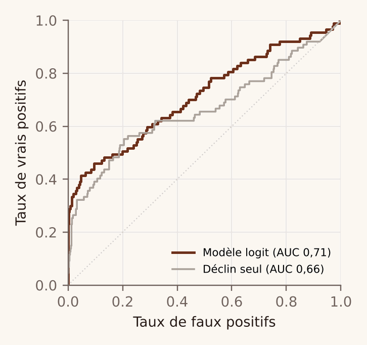
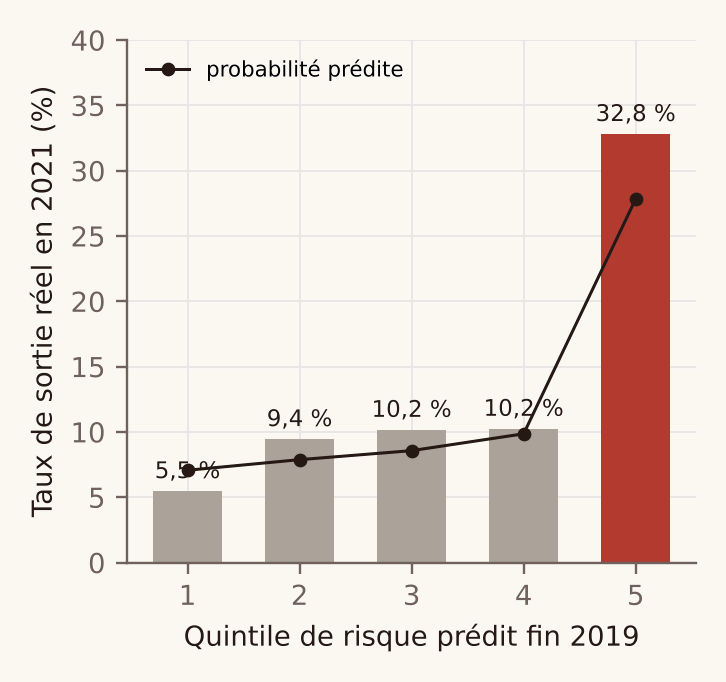
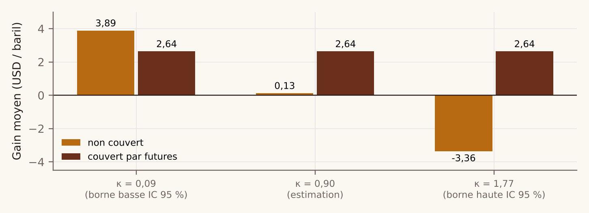

Peut-on repérer un producteur de pétrole qui va s'arrêter, avant que ça arrive ?
Au Texas, des milliers de petites entreprises produisent du pétrole. Chaque mois, elles déclarent publiquement leur production. Quand le prix chute, beaucoup s'arrêtent. Peut-on voir venir celles qui vont s'arrêter ?
Oui, en regardant leur production de près. Un producteur qui va s'arrêter ne décline pas doucement : sa production devient irrégulière, avec des mois à zéro, puis chute d'un coup. C'est ce signal que le modèle apprend à reconnaître.
À toi de deviner
Fin 2019, le modèle a classé 638 producteurs en cinq groupes, du moins risqué (1) au plus risqué (5). Deux ans plus tard, dans quel groupe les producteurs se sont-ils le plus arrêtés ? Clique sur ta réponse.
Pourquoi on peut y croire
- Un vrai test. Le modèle a appris sur la crise de 2015. On l'a ensuite testé sur la crise de 2020, qu'il n'avait jamais vue : il a bien repéré qui allait s'arrêter.
- De vraies données. La production mensuelle de 12 163 opérateurs, publiée par l'autorité pétrolière du Texas.
- Aujourd'hui. 13 producteurs encore actifs présentent un risque élevé. Je ne publie pas leurs noms : ce sont des probabilités, pas des certitudes.
À quoi ça sert ? Un négociant qui avance de l'argent à ces producteurs veut savoir lesquels risquent de ne pas livrer. La suite, combien on gagne vraiment en les finançant, est sur la page Prix et risque.
Pour aller plus loin : la méthode complète, les chiffres et les limites
La démarche
- Prix : modèle de Schwartz calibré sur le WTI 2010-2026, simulé sans erreur de discrétisation.
- Défaut lié au prix : modèle de Merton avec le point de défaut de KMV, prix et défauts simulés ensemble.
- Défaut observé : logit estimé sur la production mensuelle des 12 163 opérateurs du Texas (Railroad Commission).
- Rendement par baril : décote, qualité du brut, hub de revente optimal, financement, perte attendue.
- Allocation : programme linéaire qui maximise le profit espéré sous un plafond de CVaR et une ligne de crédit.
Résultat 1 : le modèle aurait vu venir les sorties de 2021
Estimé sur la crise de 2015, testé sans retouche sur celle de 2020 : AUC de 0,71 (IC 95 % bootstrap 0,65-0,78), contre 0,66 pour le seul déclin de production. En inversant le protocole, l'AUC vaut 0,70 : le signal est stable d'une crise à l'autre.


Ce qui annonce une sortie n'est pas le déclin régulier, normal pour un puits de schiste, mais une production qui devient irrégulière et chute brutalement : une fois ces deux variables prises en compte, le déclin sur un an n'est plus significatif (p = 0,27).
Résultat 2 : la couverture protège contre l'erreur de modèle
Sans couverture, le gain moyen par baril passe de +3,89 $ à −3,36 $ selon la valeur de κ retenue dans son intervalle de confiance. Couvert, il reste à 2,64 $ dans tous les cas.

Résultat 3 : les défauts arrivent ensemble
Sur un portefeuille diversifié de sept producteurs, la perte extrême augmente de 79 % quand les défauts suivent le prix, et la probabilité de défauts en chaîne passe de 4 % à 23 %. Voir la fiche wrong-way risk.
Application à mai 2026
Sur les 204 opérateurs texans produisant plus de 500 barils par jour, 13 produisent encore chaque mois mais présentent au moins 15 % de risque de sortie sur deux ans, pour environ 45 000 barils par jour au total. Leurs noms ne sont pas publiés : ce sont des prédictions statistiques, pas des constats.
Limites
- Une sortie peut être une faillite ou une cession de baux ; il faut croiser avec les dépôts de bilan (Chapter 11).
- Deux crises seulement pour le backtest.
- La relation entre détresse et décote est une hypothèse : aucune donnée publique sur les prix de préfinancement.
- L'irrégularité de production ne distingue pas une montée en charge d'une détresse : deux opérateurs en forte croissance sont des faux positifs probables.
Prochaines étapes
- Rapprocher les sorties des faillites réelles de 2015-2021.
- Modèle de Schwartz-Smith à deux facteurs sur la courbe des futures, par filtre de Kalman.
- Valoriser un prix plancher intégré au préfinancement.